Įžanga
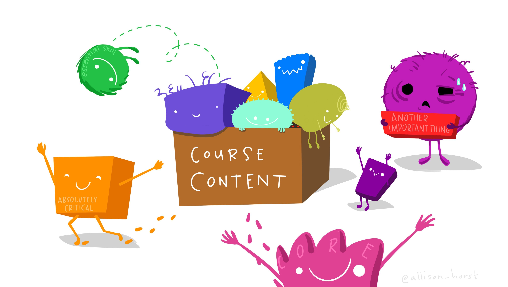

Šioje platformoje rasite mokymų medžiagą Lietuvos Statistikos
departamento viduje organizuojamiems mokymams, skirtiems tikslinėms
darbuotojų grupėms. Vienas pagrindinių šių mokymų siekių – platinti
Lietuvos Statistikos darbuotojų žinias ir gebėjimus atlikti statistinių
duomenų tinkamumo patvirtinimą, redagavimą, praleistų reikšmių įrašymą
naudojantis R programavimo kalba.
Teorinė mokymų medžiaga jau
yra parengta skaidrių pavidalu. Šioje platformoje turite galimybę
mokytis savarankiškai – peržiūrėti parengtą mokymų medžiagą, atlikti
praktines užduotis.
Ketvirtojoje mokymų dalyje pateikiama
naudinga informacija apie:
- Loginį įrašymo metodą
- Statistinį įrašymo metodą, kuris skirstomas į:
- Donorų įrašymo metodus: istorinis, atsitiktinis, nuoseklus, hierarchinis ir artimiausio kaimyno įrašymas
- Modelių įrašymo metodus: vidurkio, santykio ir regresinis įrašymas
- Daugiareikšmio įrašymo metodus
- Įrašymo kokybės tikrinimą
- Įrašymo metodo testavimą
Kaip tai veikia?
Rasite klausimų su atsakymų variantais:
Rasite klausimų, kuriuose reikalinga išrikiuoti atsakymus pagal tam tikrą eilę:
Taip pat, dirbsite su R, kur programavimo kodas veiks lyg dirbant
tiesiogiai programoje. Paspauskite Ctr+Enter arba
Vykdyti kodą mygtuką, kad įvykdytumėte programą.

2+2Jeigu nerandate tinkamo atsakymo kodo langelyje, galite pasinaudoti
Užuomina , arba pasitikrinti atsakymą
Atsakymas mygtuku.
Nepamirškite pateikti atsakymo
paspausdami Pateikti atsakymą mygtuką, kur gausite
išsamesnį komentarą apie savo kodą anglų kalba.
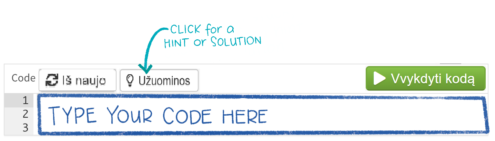
2+2==5Ar suma teisinga?2+2==4Taip pat, prieš pradedant mokymus, svarbu nuspausti mygtuką
Perkrauti (kaip pažymėta paveikslėlyje). Tai užtikrina, kad
užduotys yra vykdomos nuo pradžių. Šį mygtuką galite naudoti kaskart,
kai norite perkrauti mokymų medžiagą ir ją įvykdyti iš naujo.
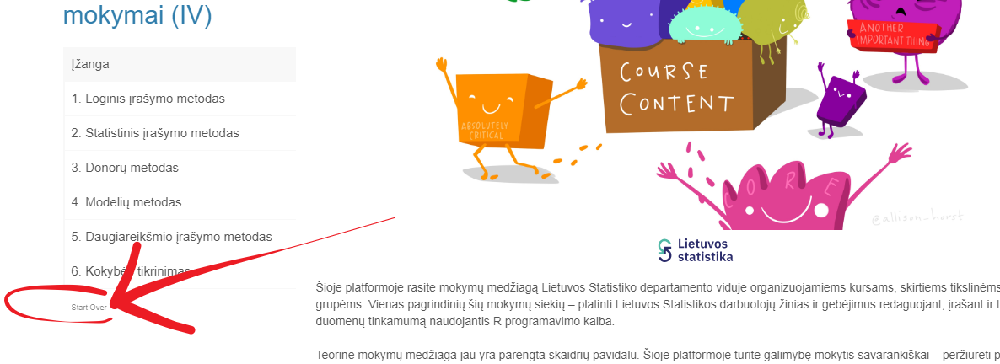
Iliustracijos
Ši mokymų platforma iliustruota paveikslėliais, kuriuos galite rasti šiuo adresu. Naudojant šias iliustracijas, cituokite jas taip: “Artwork by @allison_horst”.
Sėkmės!
1. Loginis įrašymo metodas
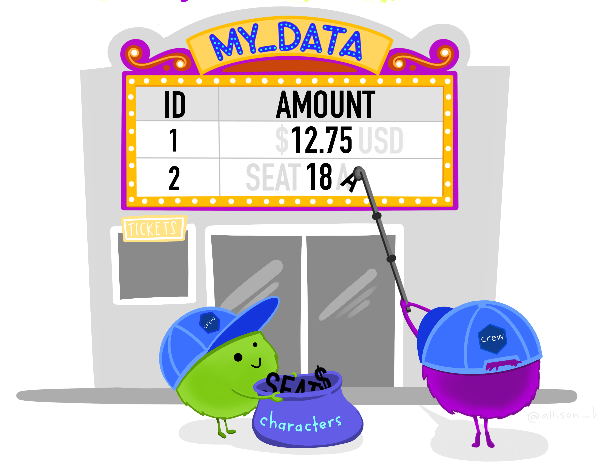
Loginis įrašymo metodas pasižymi tuo, kad vietoj praleistų ar klaidingų reikšmių įrašomos tikslios reikšmės, panaudojant respondento pateiktus statistinius duomenis. Loginis įrašymas turi būti atliekamas prieš taikant visus kitus įrašymo metodus.
1.1. Pažymėkite 3 loginio įrašymo privalumus.
2. Statistinis įrašymo metodas
Statistinis įrašymo metodas – toks metodas, kai reikšmėms įrašyti naudojami papildomi duomenys ir įvairūs statistiniai metodai.
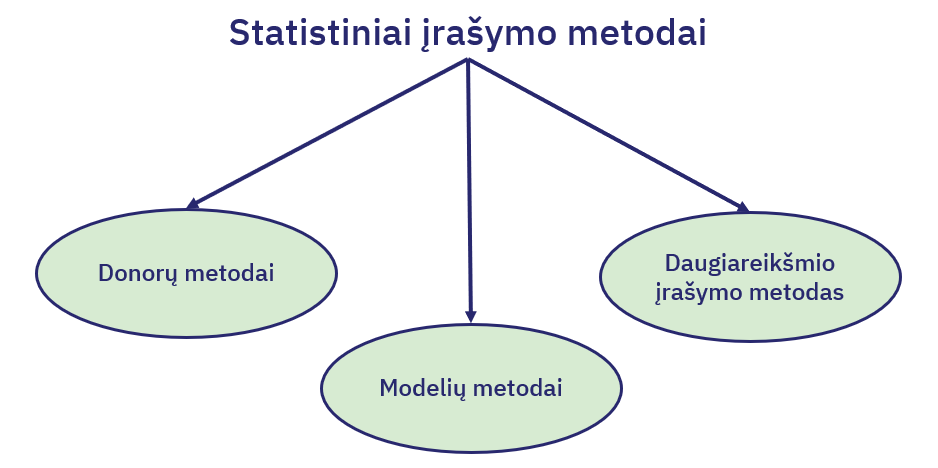
2.1. Surikiuokite statistinio įrašymo metodus pagal žemiau pateiktą jų apibūdinimų eilę.
3. Donorų metodas
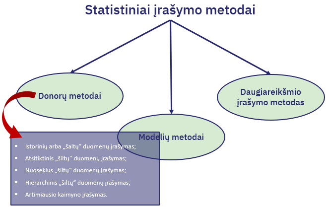
Istorinių arba „šaltų“ duomenų įrašymo metodas
Istorinių arba „šaltų“ duomenų įrašymas angl. cold deck imputation – metodas, kai vietoj praleistų ar klaidingų statistinio tyrimo kintamojo reikšmių įrašomi ankstesnių statistinių tyrimų ar kitų šaltinių duomenys. Šis įrašymo metodas naudojamas, kai nagrinėjamas kintamasis su ankstesniais duomenimis susijęs labiau, negu su nagrinėjamo statistinių duomenų rinkinio reikšmėmis
Atsitiktinis „šiltų“ duomenų įrašymo metodas
Atsitiktinis „šiltų“ duomenų įrašymas angl. random hot deck imputation. Remiantis pagalbiniais kategoriniais kintamaisiais, kurių reikšmės žinomos visiems populiacijos (imties) elementams, sudaromos įrašymo klasės su vienodomis šių kintamųjų reikšmėmis. Kiekvienam recipientui donoras parenkamas atsitiktinai, paprastai potencialių donorų išrinkimo tikimybės imamos vienodos.
- Metodas labai paprastas, tačiau tokiu būdu įrašyta reikšmė neturi sąryšio su tikrąja reikšme.
Nuoseklus „šiltų“ duomenų įrašymo metodas
Nuoseklus „šiltų“ duomenų įrašymas (angl. sequential hot deck imputation) – metodas, kai, tam tikru būdu išrikiavus duomenų rinkinį, recipientui parenkamas tos pačios įrašymo klasės donoras, kuris duomenų rinkinyje eina prieš recipientą.
- Metodo privalumai: patogus, nes yra nedaug skaičiavimų. Tinkamas ir kategoriniams statistiniams duomenims, kai surikiavus pagal kiekybinius kintamuosius įrašomos kokybinio kintamojo reikšmės.
- Metodo trūkumas: gali pasitaikyti daug tokių pačių įrašytų reikšmių. Taip gali atsitikti dėl mažo donorų skaičiaus įrašymo klasėje, taip pat tokiu atveju, jei duomenų rinkinyje vienas po kito eina keli elementai su praleista nagrinėjamo kintamojo reikšme. To galima išvengti. Pavyzdžiui, pataisius įrašymo algoritmą: parenkami keli potencialūs donorai, duomenų rinkinyje einantys prieš recipientą, o tada iš jų atsitiktinai parenkamas vienas, kurio nagrinėjamo kintamojo reikšmę naudosime įrašant duomenis.
Hierarchinis „šiltų“ duomenų įrašymo metodas
Hierarchinis „šiltų“ duomenų įrašymas (angl. hierarchical hot deck imputation) – tai nuoseklaus „šiltų“ duomenų įrašymo metodo apibendrinimas, kai naudojama daug papildomų kintamųjų (tuo pačiu ir daug įrašymo klasių).
Artimiausio kaimyno įrašymo metodas
Artimiausio kaimyno įrašymo medotas angl.
nearest-neighbour imputation – metodas, kai naudojantis vienu ar
keliais papildomais kintamaisiais ir naudojant kokią nors atstumo
funkciją recipientui randamas donoras su artimiausiomis tų kintamųjų
reikšmėmis.
Optimalus kaimynų skaičius yra 10-15.
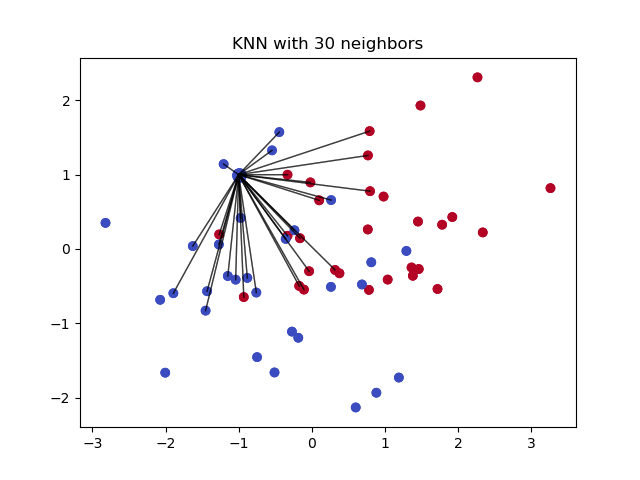
3.1. Surikiuokite žemiau pateiktų statistinio įrašymo metodų privalumus pagal žemiau pateiktą jų pavadinimų eilę.
3.2. Atlikite artimiausio kaimyno įrašymą duomenų rinkinio
duomenys kintamajam ISSILAVINIMAS_KODAS
naudodami 3 skirtingus pagalbinius kintamuosius. Žemiau esančiame kode
pakeiskite k artimiausių kaimynų skaičių iš
k=10 į k=15.
knn_imp <- kNN(duomenys, variable = "ISSILAVINIMAS_KODAS_imp", k = 10,
dist_var = c("BENDRAS_bdu","AKTYVUMAS_ID","AMZIUS"))Pakeiskite k = 10 į k = 15.knn_imp <- kNN(duomenys, variable = "ISSILAVINIMAS_KODAS_imp", k = 15,
dist_var = c("BENDRAS_bdu","AKTYVUMAS_ID","AMZIUS"))3.3. Pasinaudokite žemiau esančiu kodo langeliu ir suraskite koks
išsilavinimo kodas 3.2. užduotyje artimiausio kaimyno įrašymo
metodu buvo priskirtas asmeniui, kurio ASMENS_ID_NR yra
395566?
Reikšmė įrašyta naujai sukurtame stulpelyje pavadinimu
ISSILAVINIMAS_KODAS_imp
Pasinaudokite filter() funkcija. Ieškokite stulpelio pavadinimu ISSILAVINIMAS_KODAS_imp knn_imp %>%
filter(ASMENS_ID_NR == 395566)Pradžioje asmens išsilavinimas, kurio
ASMENS_ID_NR == 395566, nebuvo nurodytas. Taikant
artimiausio kaimyno įrašymo metodą, jam buvo priskirtas išsilavinimo
kodas (jį suradote 3.3 užduotyje).
3.4. Kokia šio išsilavinimo kodo reikšmė?
ISSL # ISSL - jau įrašyta duomenų lentelė su unikaliais išsilavinimo kodais ir jų pavadinimais. Pavyzdžiui, galite naudotis subset() funkcija, kurios pagalba norimas atsakymas bus išvestas kaip rezultatas.subset(ISSL, ISSILAVINIMAS_KODAS == 12)4. Modelių metodas
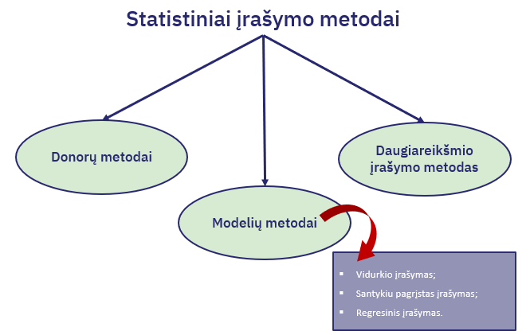
Vidurkio įrašymas
Vidurkio įrašymas (angl. mean imputation) – metodas, kai vietoj praleistų ar klaidingų tyrimo kintamojo reikšmių yra įrašomas šio kintamojo elementų vidurkis. Šis įrašymo metodas gali tikti, kai tyrimo kintamojo reikšmės yra simetriškai pasiskirsčiusios apie tiriamosios populiacijos vidurkio reikšmę.
- Metodo privalumas: jį lengva realizuoti.
4.1. Atliksime vidurkio įrašymo metodą praleistoms
Solar.R reikšmėms. Pirmiausia, importuokite pavyzdinį
duomenų rinkinį oro_kokybe ir patikrinkite, ar visos
Solar.R reikšmės yra užpildytos, t.y. nėra trūkstamų
reikšmių. Žemiau pateikti 3 skirtingi tikrinimo variantai.
oro_kokybe <- airquality
mean(complete.cases(oro_kokybe$____))
unique(oro_kokybe$____)
any(is.na(oro_kokybe$____))Tuščioje vietoje įveskite kintamojo, kurio trūkstamas reikšmes norite patikrinti, pavadinimą.oro_kokybe <- airquality
mean(complete.cases(oro_kokybe$Solar.R))
unique(oro_kokybe$Solar.R)
any(is.na(oro_kokybe$Solar.R))Kadangi atsakymas [1] 0.9542484, 95.43% visų reikšmių
yra įrašytos, tad dalies - trūksta.
Beje, nors šiuo atveju to nedaysime, paprastai vidurkio įrašymą geriausia atlikti tam tikrų grupių viduje. Pavyzdžiui, jeigu įrašinėtume vidurkį įmonių tyrimo duomenims, įrašytume ekonominės veiklos rūšies grupėms (pvz., žemės ūkio įmonėms atskirai įrašytume atitinkamos grupės vidurkį).
4.2. Į trūkstamą vietą įrašykite vidurkio funkciją
mean() (2 eilutė). 5-toje eilutėje su funkcija
mean() taip pat patikrinkite ar trūstamų reikšmių neliko.
6-oje eilutėje su funkcija unique() įvertinkite, ar visos
reikšmės įrašytos. 7-toje - any() įvertinkite ar liko
neįrašytų reikšmių.
mean_imputation <- oro_kokybe %>%
mutate(Solar.R = ifelse(is.na(Solar.R), round(___(Solar.R, na.rm=T), digits = 0), Solar.R))
_____(complete.cases(mean_imputation$Solar.R))
___(mean_imputation$Solar.R)
___(is.na(oro_kokybe$Solar.R))Tuščioje vietoje įveskite funkcijų minimų užduotyje pavadinimus, taip kaip 4.1. užduotyje.mean_imputation <- oro_kokybe %>%
mutate(Solar.R = ifelse(is.na(Solar.R), round(mean(Solar.R, na.rm=T), digits = 0), Solar.R))
mean(complete.cases(mean_imputation$Solar.R))
unique(mean_imputation$Solar.R)
any(is.na(oro_kokybe$Solar.R))Kadangi atsakymas [1] 1, vadinasi 100% visų reikšmių yra
įrašytos. Norint patikrinti įrašymo kokybę, galite atlikti tolimesnius
veiksmus, pvz. tikrinti, ar skirstinys reikšmingai pakito po įrašymo.
Kokybės tikrinimas bus aptartas šių mokymų 6-tame skyriuje.
Santykiu pagrįstas įrašymas
Santykiu pagrįstas įrašymas (angl. ratio imputation) – tai metodas, kai vietoj praleistos ar klaidingos tyrimo kintamojo reikšmės yra įrašoma reikšmė, gauta naudojant šio ir papildomo kintamojo reikšmių santykį.
Regresinis įrašymas
Regresinis įrašymas (angl. regression imputation) – metodas, kai įrašymui naudojami regresiniai modeliai. Tarkime, tyrimo kintamasis yra 𝑌 ir turime papildomus kintamuosius \((𝑋_1, …, 𝑋_𝑞 )\). Galima sudaryti tiesinės regresijos modelį: \[𝑌=𝑎+𝑏_1 𝑋_1+…+𝑏_𝑞 𝑋_𝑞+𝑒, \]
Norint naudoti regresinį įrašymą, reikia turėti bent vieną papildomą kintamąjį (regresorių), kuris gerai modeliuotų kintamąjį su praleistomis reikšmėmis.
4.3. Surikiuokite modelių metodų trūkumus pagal žemiau pateiktą jų pavadinimų eilę.
5. Daugiareikšmio įrašymo metodas
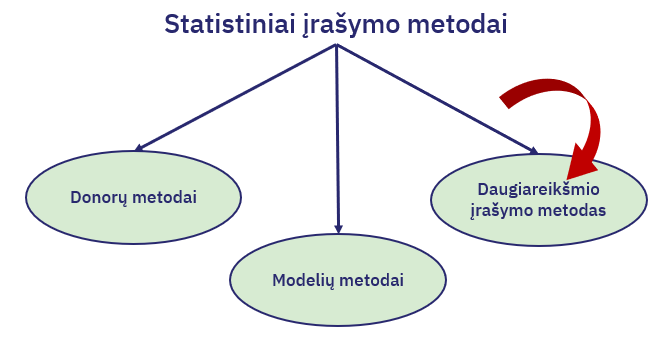
Daugiareikšmio įrašymo metodą galima aprašyti tokiu algoritmu:
- Taikant pasirinktą atsitiktinio praleistų reikšmių modeliavimo metodą (pvz. stochastinį regresinį įrašymą), vietoj praleistų ir klaidingų tyrimo kintamojo reikšmių sumodeliuojamos ir įrašomos priskirtos reikšmės. Sumodeliavus trūkstamas reikšmes vieną kartą, gaunamas užpildytas statistinių duomenų rinkinys;
- Procedūra pakartojama nepriklausomai 𝑀 kartų ir gaunama 𝑀 užpildytų statistinių duomenų rinkinių (pagal literatūrą, pakanka imti 𝑀=10 ar net mažiau);
- Naudojant kiekvieną iš šių duomenų rinkinių, įprastiniu būdu apskaičiuojamas tiriamosios populiacijos nagrinėjamo parametro įvertis – gaunama 𝑀 skirtingų įverčių;
- Galutinis daugiareikšmio įrašymo metodu gaunamas parametro įvertis – šių 𝑀 įverčių aritmetinis vidurkis.
- Metodo privalumai - ypač naudingas sudėtingų tyrimų duomenų analizei.
- Metodo trūkumai - sulaukia kritikos, kai praleistoms reikšmėms modeliuoti yra taikoma keletas modelių, arba kai neatsakymai yra neatsitiktiniai.
5.1. Įveskite praleistas ar klaidingas
ISSILAVINIMAS_KODAS_imp reikšmes naudodamiesi
daugiareikšmio įrašymo metodu mice.impute.polyreg()
funkcija.
(kitus stulpelius galima peržiūrėti su rodyklėmis
prie pavadinimų)
polyreg_imp6 <- _____(y = duomenys$_____,
ry = !is.na(duomenys$______),
x = duomenys[,c("BENDRAS_bdu","AKTYVUMAS_ID","AMZIUS")],
wy = is.na(duomenys$______))
duomenys$ISSILAVINIMAS_KODAS_imp[is.na(duomenys$ISSILAVINIMAS_KODAS_imp)] <- polyreg_imp6Ar įvedėte `mice.impute.polyreg()` funkciją ir kintamojo pavadinimą į tuščias vietas? Taip pat, jei neaiški funkcijos sintaksė, pasinaudokite help("mice.impute.polyreg").polyreg_imp6 <- mice.impute.polyreg(y = duomenys$ISSILAVINIMAS_KODAS_imp,
ry = !is.na(duomenys$ISSILAVINIMAS_KODAS_imp),
x = duomenys[,c("BENDRAS_bdu", "AKTYVUMAS_ID", "AMZIUS")],
wy = is.na(duomenys$ISSILAVINIMAS_KODAS_imp))
duomenys$ISSILAVINIMAS_KODAS_imp[is.na(duomenys$ISSILAVINIMAS_KODAS_imp)] <- polyreg_imp65.2. Pasinaudokite žemiau esančiu kodo langeliu ir suraskite koks
išsilavinimo kodas 5.1. užduotyje daugiareikšmio įrašymo metodu
buvo priskirtas asmeniui, kurio ASMENS_ID_NR yra
395566?
Pasinaudokite filter() funkcija. Ieškote stulpelio pavadinimu ISSILAVINIMAS_KODAS_impduomenys %>%
filter(ASMENS_ID_NR == 395566)Pradžioje, asmens išsilavinimas, kurio
ASMENS_ID_NR == 395566, nebuvo nurodytas. Taikant
daugiareikšmio įrašymo metodą, jam buvo priskirtas išsilavinimo kodas
(jį suradote 5.2 užduotyje).
5.3. Kokia šio išsilavinimo kodo reikšmė?
ISSL # ISSL - jau įrašyta duomenų lentelė su unikaliais išsilavinimo kodais ir jų pavadinimais. Pavyzdžiui, galite naudotis subset() funkcija, kurios pagalba rasite koks išsilavinimo pavadinimas priskirtas asmeniui 5.2. užduotyje. subset(ISSL, ISSILAVINIMAS_KODAS == 3)
6. Kokybės tikrinimas

Žemiau esančiu kodu tikrinama, ar reikšmingai skiriasi kintamųjų skirstiniai prieš ir po praleistų reikšmių įrašymo daugiareikšmio įrašymo metodu.
6.1. Atidžiai peržvelkite žemiau nurodytą kokybės tikrinimo kodą.
duomenys$ISSILAVINIMAS_KODAS_imp[is.na(duomenys$ISSILAVINIMAS_KODAS_imp)] <- polyreg_imp6
past <- as.data.frame(table(duomenys$ISSILAVINIMAS_KODAS_f))
past <- data.frame(past, dalis = past$Freq/sum(!is.na(duomenys$ISSILAVINIMAS_KODAS_f)))
poll <- as.data.frame(table(duomenys$ISSILAVINIMAS_KODAS_imp))
df1 <- merge(past, poll, by = "Var1", all = TRUE)
df1[is.na(df1$Freq.y),"Freq.y"] <- 0
chisq.test(x = df1$Freq.y, p = df1$dalis) # p-reikšmė = 1Žemiau esančioje dalyje tikrinama, ar reikšmingai skiriasi kintamųjų skirstiniai prieš ir po praleistų reikšmių įrašymo artimiausio kaimyno metodu.
6.2. Atidžiai peržvelkite žemiau nurodytą kokybės tikrinimo kodą.
past <- as.data.frame(table(knn_imp$ISSILAVINIMAS_KODAS_f))
past <- data.frame(past, dalis = past$Freq/sum(!is.na(knn_imp$ISSILAVINIMAS_KODAS_f)))
poll <- as.data.frame(table(knn_imp$ISSILAVINIMAS_KODAS_imp))
df2 <- merge(past, poll, by = "Var1", all = TRUE)
df2[is.na(df2$Freq.y),"Freq.y"] <- 0
chisq.test(x = df2$Freq.y, p = df2$dalis) # p-reikšmė = 16.3. Atidžiai peržvelkite žemiau nurodytą kokybės tikrinimo kodą.
df <- merge(df1, df2[,c(1,4)], by = "Var1", all.x = TRUE)
df <- merge(df, ISSL, by.x = "Var1", by.y = "ISSILAVINIMAS_KODAS", all.x = TRUE)
df$dalis.y.x <- df$Freq.y.x / (df$Freq.x/df$dalis)
df$dalis.y.y <- df$Freq.y.y / (df$Freq.x/df$dalis)
df <- df[,c(1,6,2,3,4,7,5,8)]
names(df) <- c("kodas", "pav", "kiekis_pries", "dalis_pries",
"kiekis_mice", "dalis_mice", "kiekis_knn", "dalis_knn")
df$dalis_pries <- round(df$dalis_pries*100, 2) # asmenų proc. dalis prieš įrašymą
df$dalis_mice <- round(df$dalis_mice*100, 2) # asmenų proc. dalis po įrašymo su "mice"
df$dalis_knn <- round(df$dalis_knn*100, 2) # asmenų proc. dalis po įrašymo su "knn_imp"
View(df)6.4. Grafinė kokybės analizė: peržiūrėkite ir įvykdykite kodą, atsakykite į klausimus.
educ_po <- sort(table(duomenys$ISSILAVINIMAS_KODAS.y), decreasing = TRUE)
educ_pries <- sort(table(duomenys$ISSILAVINIMAS_KODAS.x[!duomenys$ISSILAVINIMAS_KODAS.y_imp]), decreasing = TRUE)
rbind(round((educ_pries/sum(!duomenys$ISSILAVINIMAS_KODAS.y_imp))*100, 3),
round((educ_po/nrow(duomenys))*100, 3)[names(educ_pries)],
abs(round((educ_pries/sum(!duomenys$ISSILAVINIMAS_KODAS.y_imp))*100, 3) -
round((educ_po/nrow(duomenys))*100, 3)[names(educ_pries)]))
pav_plot <- round(abs(round((educ_pries/sum(!duomenys$ISSILAVINIMAS_KODAS.y_imp))*100, 3) -
round((educ_po/nrow(duomenys))*100, 3)[names(educ_pries)]), 2)
pav_plot[pav_plot == 0] <- ""
min_max <- range(c(round((educ_pries/sum(!duomenys$ISSILAVINIMAS_KODAS.y_imp))*100, 3),
round((educ_po/nrow(duomenys))*100, 3)[names(educ_pries)]))
v <- 1:length(educ_po)
par(mfrow = c(1,1))
plot(v, unname(round((educ_pries/sum(!duomenys$ISSILAVINIMAS_KODAS.y_imp))*100, 3)),
xaxt = "n", yaxt = "n", xlab = "ISSILAVINIMAS_KODAS", ylab = "proc. pasiskirstymas",
col = "white", main = "IE SILAVINIMAS")
abline(h = round(seq(min_max[1], min_max[2], 1), 2), v = v, col = "gray90", lty = 1, cex = 0.5)
lines(v, unname(round((educ_pries/sum(!duomenys$ISSILAVINIMAS_KODAS.y_imp))*100, 3)),
type = "b", lwd = 2, col = "blue")
lines(v, round((educ_po/nrow(duomenys))*100, 3)[names(educ_pries)],
type = "b", lty = 2, lwd = 2, col = "red")
axis(1, v, names(educ_pries), las = 1, cex.axis = 0.8)
axis(2, round(seq(min_max[1], min_max[2], 0.5), 2), las = 2, cex.axis = 0.8)
text(v, round((educ_po/nrow(duomenys))*100, 3)[names(educ_pries)],
labels = pav_plot, cex = 0.7, adj = c(-0.5,-0.5), col = "gray50")
legend(x = "topright", legend = c("Prieš įrašymą", "Po įrašymo"),
lty = 1:2, col = c("blue","red"), lwd = 2) # skaičiais pažymimi didžiausi skirtumai# Remkitės ISSL kodų lentele.Galite naudotis View() funkcija, kad patikrintumėte ką reikšia kiekvienas iš išsilavinimo kodų.View(ISSL)7. Įrašymo metodo testavimas
7.1. Peržvelkite numanomo duomenų rinkinio pavyzdį.
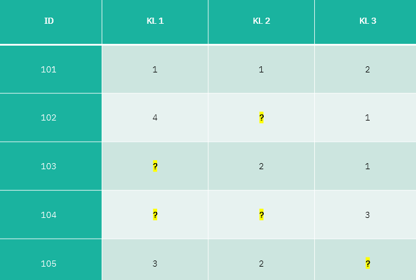
Dabar, prisiminkime artimiausio kaimyno įrašymo metodą. Duomenų rinkinys jau paruoštas jo kokybės tikrinimui ir šio įrašymo metodo testavimui.
7.2. Pasinaudokite žemiau esančiu kodo langeliu ir apskaičiuokite artimiausių kaimynų metodu įrašytų praleistų reikšmių dalį procentais.
Remkitės rekomenduojamomis kokybės rodiklių formulėmis pateiktomis mokymų skaidrėse.
Apskaičiuokite trūkstamų reikšmių skaičių ISSILAVINIMAS_KODAS stulpelyje. Reikiamą formulę rasite mokymų skaidrėse. Suradę trūkstamų reikšmių skaičių, apskaičiuokite kiek tai sudaro reikšmių procentaliai.proc <- (sum(is.na(duomenys$ISSILAVINIMAS_KODAS))*100)/nrow(duomenys)
procDabar, prisiminkime daugiareikšmio įrašymo metodą.
7.3. Importuokite duomenų rinkinį ir atlikite daugiareikšmio įrašymo metodą praleistoms reikšmėms (1-5 eilutės). Apskaičiuokite, kiek procentaliai elementų įgavo bent po vieną po naują reikšmę (8-9 eilutės).
Remkitės rekomenduojamomis kokybės rodiklių formulėmis pateiktomis mokymų skaidrėse.
_____ <- airquality
imp <- mice(______, print = F)
imputed <- complete(imp)
# redaguotų statistinio tyrimo elementų dalis (procentais)
(proc <- (sum(is.na(_____$Ozone) | is.na(_____$Solar.R))*100)/nrow(_____)
)Į tuščias vietas įrašykite jums tinkantį duomenų rinkinio pavadinimą. Procentų daliai apskaičiuoti, reikiamą formulę rasite mokymų skaidrėse.Galite surasti elementų skaičių, kurie turėjo praleistą reikšmę su summary(oro_kokybe). Kadangi praleistos reikšmės buvo tik Ozone ir Solar.R stulpeliuose, apskaičiuokite kiek tai sudaro viso elementų procentaliai.oro_kokybe <- airquality
imp <- mice(oro_kokybe, print = F)
imputed <- complete(imp)
# redaguotų statistinio tyrimo elementų dalis (procentais)
(proc <- (sum(is.na(oro_kokybe$Ozone) | is.na(oro_kokybe$Solar.R))*100)/nrow(oro_kokybe))7.4. Surikiuokite statistinių duomenų įrašymo metodo testavimo veiksmus pagal jų eiliškumą.
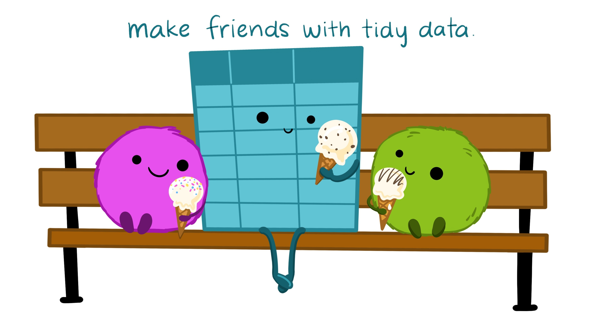